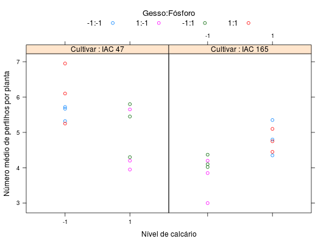

Dados de um ensaio fatorial fracionado \(2^{4-1}\), em blocos ao acaso. O experimento mediu o número médio de perfilhos por planta. Os quatro fatores estudados foram: cultivar, calcário, gesso e fósforo. Para os fatores abióticos, o nível baixo correspondeu à não aplicação do insumo e para as cultivares, a IAC 47. O nível 1 correspondeu a: cultivar IAC 165, 5000 kg ha\(^{-1}\) de calcário, 1500 kg ha\(^{-1}\) de gesso e kg ha\(^{-1}\) de fósforo.
Um data.frame com 24 observações e 3 variáveis, em que
bloccultcalcgessp2o5perfZIMMERMANN (2004), pág. 306.
Apesar de ter sido um experimento feito em blocos, não foi utilizado confundimento bom blocos, pois todos os blocos tiveram a mesma fração do fatorial (a fração complementar não foi utilizada).
library(lattice) data(ZimmermannTb15.1)#> Warning: data set ‘ZimmermannTb15.1’ not foundstr(ZimmermannTb15.1)#> 'data.frame': 24 obs. of 6 variables: #> $ bloc: Factor w/ 3 levels "1","2","3": 1 2 3 1 2 3 1 2 3 1 ... #> $ cult: num -1 -1 -1 -1 -1 -1 -1 -1 -1 -1 ... #> $ calc: num -1 -1 -1 -1 -1 -1 1 1 1 1 ... #> $ gess: num -1 -1 -1 1 1 1 -1 -1 -1 1 ... #> $ p2o5: num -1 -1 -1 1 1 1 1 1 1 -1 ... #> $ perf: num 5.67 5.72 5.32 5.25 6.1 6.95 5.8 4.3 5.45 5.65 ...ftable(xtabs(~cult + calc + gess + p2o5, data = ZimmermannTb15.1))#> p2o5 -1 1 #> cult calc gess #> -1 -1 -1 3 0 #> 1 0 3 #> 1 -1 0 3 #> 1 3 0 #> 1 -1 -1 0 3 #> 1 3 0 #> 1 -1 3 0 #> 1 0 3xyplot(perf ~ factor(calc) | factor(cult), groups = interaction(gess, p2o5, sep = ":"), data = ZimmermannTb15.1, xlab = "Nível de calcário", ylab = "Número médio de perfilhos por planta", auto.key = list(title = "Gesso:Fósforo", cex.title = 1.1, columns = 4), strip = strip.custom(strip.names = TRUE, var.name = "Cultivar", factor.levels = c("IAC 47", "IAC 165")))